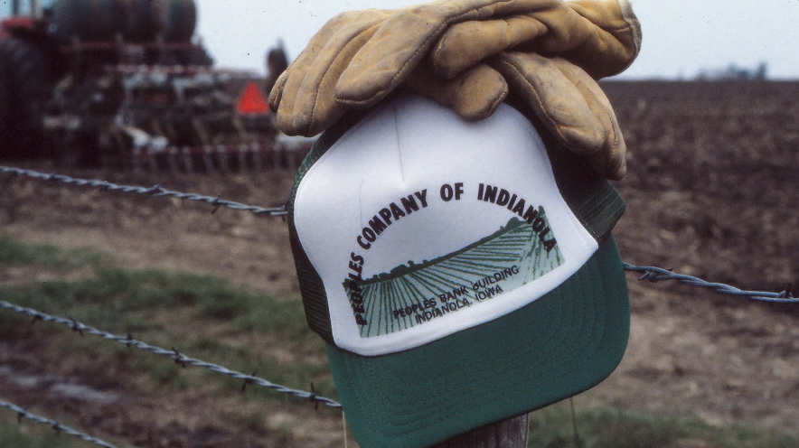

About Peoples Company
Peoples Company is the nation's leading farmland services platform, built on more than six decades of expertise, relationships, and an unbreakable commitment to the landowners and families who have entrusted us with their most significant asset. From our origins as the farm management department of a small Iowa savings bank in the 1960s, we have grown into a coast-to-coast organization serving clients across the most productive agricultural regions in America. What has never changed is our core convictions: that great farmland service begins with understanding the land, the families who own it, and the legacy they are working to preserve.
In 1972, Peoples Trust and Savings Bank separated its farm management and real estate operations to form Peoples Company as an independent firm. For three decades, we served landowners across central Iowa with the kind of personalized, relationship-driven service that can only come from deep local knowledge. That foundation of integrity and trust would be essential when the company embarked on an ambitious transformation in the early 2000’s, to grow from a small, respected Iowa firm into a national platform that provides the same professional, localized service to clients everywhere it operates.
The strategy to scale Peoples Company into a national platform was the vision of our President, Steve Bruere, who joined the firm in 2003 and assumed his role just a year after graduating college. Steve recognized a need in the farmland market for personalized, kitchen-table service of a local expert with the resources and technology of a national organization. That vision required finding the right people, professionals with local expertise, a relentless work ethic, and genuine commitment to client success.
Through several strategic partnerships and the acquisition of numerous respected firms, we have woven together decades of local expertise into a single, integrated platform. When landowners work with Peoples Company, they receive the full depth of 60 years of history, the breadth of our national network and technology assets, and the expertise that only comes from professionals who have dedicated their careers to the land.

The Peoples Company Difference
-

50+ Years of Commitment
Peoples Company began in the 1970s as a central Iowa land brokerage and management firm serving local landowners. More than five decades later, that founding commitment remains the same.
-

National Platform, Local Expertise
What began as a single-office Iowa firm now spans a national network of offices, each led by local experts who understand the land, the people, and the production systems of their region.
-

Comprehensive Farmland Services
Peoples Company is the only land services firm offering fully integrated brokerage, land management, appraisal, and capital markets, along with crop insurance and energy management support.
-

A Legacy of Strategic Growth
Peoples Company has united the histories of more than a dozen respected regional farmland firms through carefully chosen partnerships, each sharing a commitment to local knowledge and client success.
-

Industry Recognized Professionals
Peoples Company is recognized by national trade associations and agricultural media as the benchmark for farmland services. Its professionals rank among the top producers in their disciplines.
-

Stewards of American Farmland
Farmland is not merely a financial asset, it is a legacy, often held across generations. Peoples Company professionals bring the same care and long-term perspective landowners bring to stewarding it.
Seven services. One integrated platform.
Land Brokerage & Auctions
Farmland listings and competitive auction services with a 40,000+ buyer database and national reach.
Land Management
Full-service stewardship, operator oversight, lease negotiation, and financial reporting.
Agricultural Appraisal
Certified, data-driven land valuation supported by proprietary comparable-sales modeling.
Capital Markets
Equity placement, debt structuring, JV formation, and portfolio advisory for institutional capital.
Energy Management
Solar, wind, and energy lease strategy, negotiation, and oversight for landowners.
Crop Insurance
Tailored multi-peril and specialty coverage protecting farm operations and yield.
Corporate Services
Institutional programs for ag lenders, REITs, and large land portfolios requiring scale.
Explore All Services
See all seven integrated services and find the right team for your land.
Over 50 Years of Service
Our team was proud to celebrate 50 years of serving the agricultural industry in 2022. Watch this video to hear more about our history and how our team and business grew to what it is today.

Shared Values
Peoples Company has grown through acquisition and strategic partnerships, but it has endured through culture. Every firm that has joined our platform did so because of an alignment that went beyond geography or common services. They shared our belief that landowners deserve to partner with professionals who show up, do the rigorous work necessary to succeed, and put the client's success first - every time.
The culture that has developed across Peoples Company over more than two decades is not manufactured or managed from the top down. It has been built relationship by relationship, hire by hire, by professionals who took ownership of the firm's vision and made it their own. At Peoples Company, excellence attracts excellence. The values that defined our first team members have been reinforced and deepened by every individual who has since joined the Peoples Company brand.
This culture is our greatest competitive advantage. Our team members genuinely believe in what they are building and hold themselves and each other to the highest standards in the industry. When combined with national scale and industry leading technology, it gives our clients the confidence that our professionals will help them achieve the most from their land.